全部課程
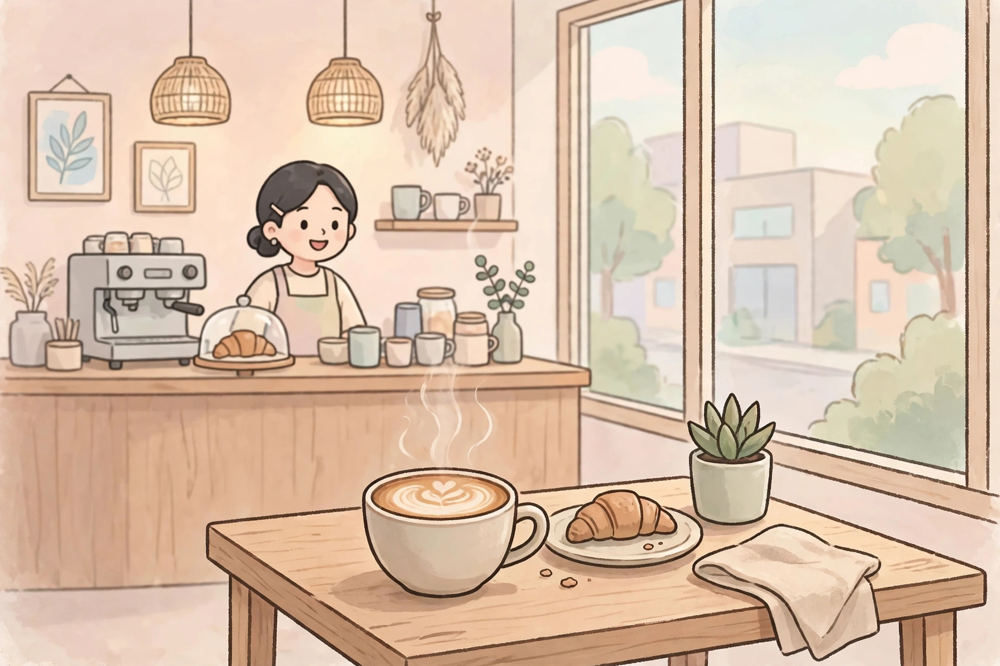
안녕하세요. 주문하시겠어요?
點餐、問價錢、外帶，一次學會。
進入課程 →
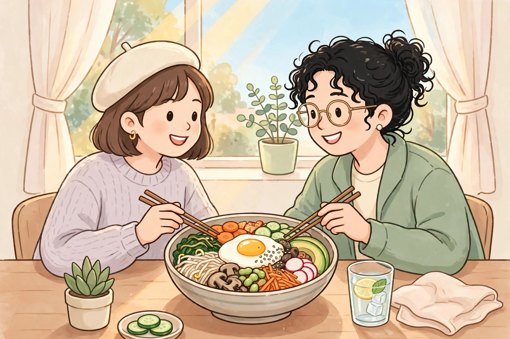
오늘 날씨가 좋네요.
約朋友吃午飯，聊聊拌飯和天氣。
進入課程 →
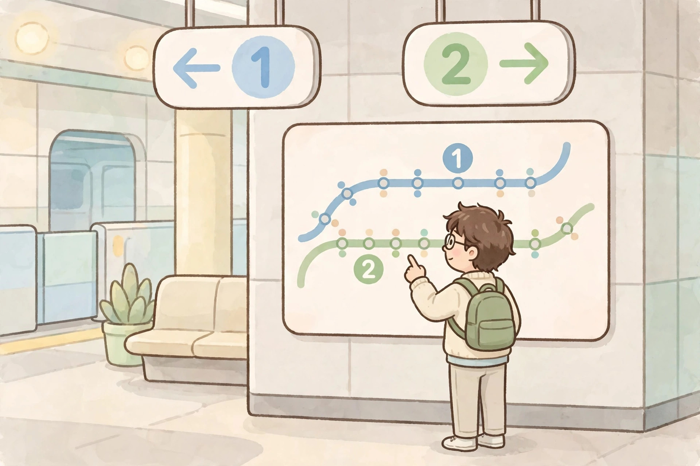
서울역까지 어떻게 가요?
問路去首爾站，學搭線、換乘和找出口。
進入課程 →
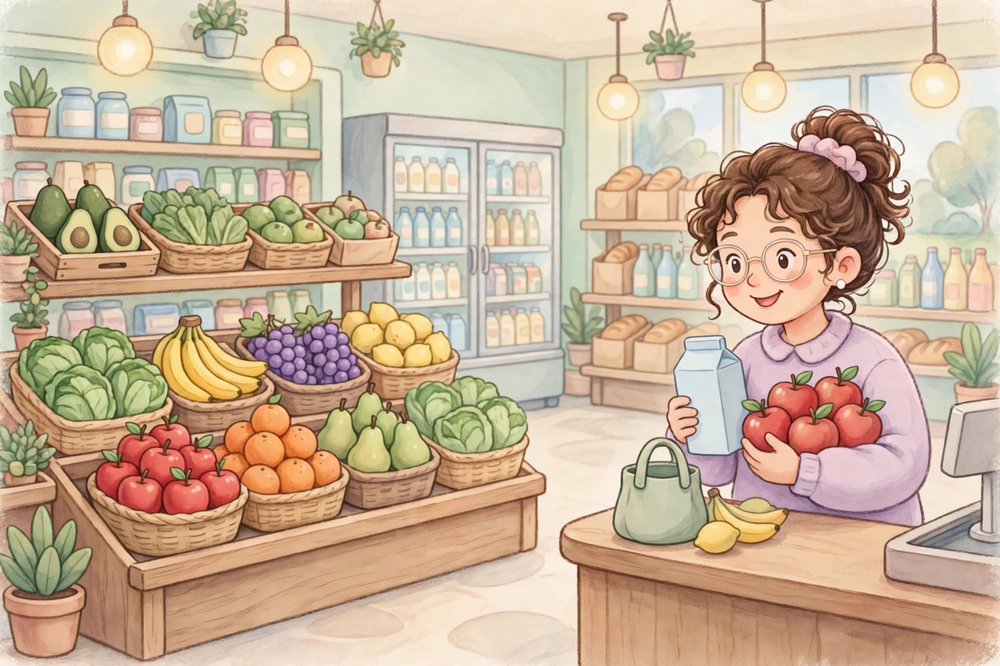
사과 한 개 얼마예요?
買蘋果和牛奶，學問價錢、說數量和結帳。
進入課程 →
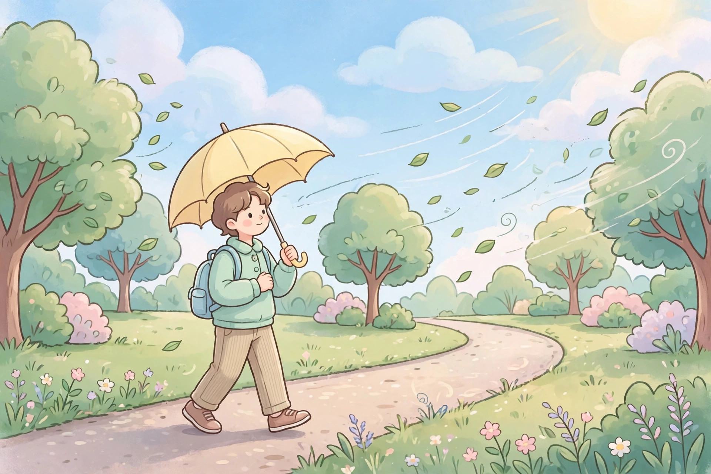
오늘 날씨가 어때요?
聊晴朗、刮風、下雨，學帶傘的建議。
進入課程 →
이번 토요일에 같이 만나요?
約朋友星期六在公園散步、喝咖啡。
進入課程 →
안녕하세요, 오늘 몸이 조금 아파서 병원에 왔어요.
身體不舒服去看病，學說頭痛、喉嚨痛和好好休息。
進入課程 →
여보세요, 지민 씨예요?
打電話約朋友下午三點在學校前面的咖啡店見面，學打招呼、問時間和約地點。
進入課程 →
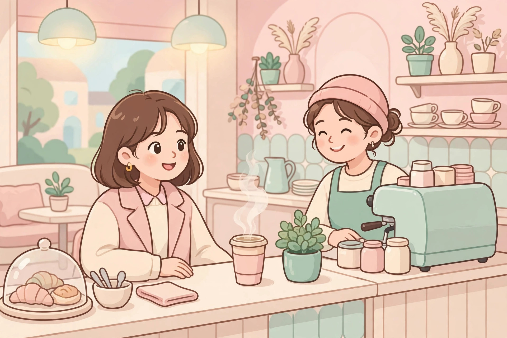
안녕하세요, 따뜻한 아메리카노 한 잔 주세요.
在咖啡店點一杯熱美式，學數量詞、問價錢和用卡結帳。
進入課程 →
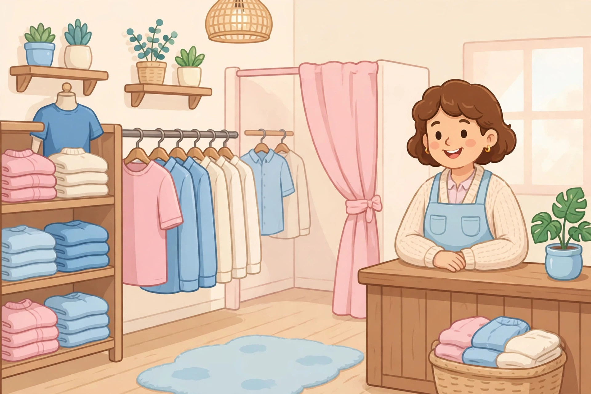
안녕하세요, 이 옷을 입어 봐도 돼요?
在服裝店試穿衣服，學問價錢、選顏色和用卡結帳。
進入課程 →
안녕하세요! 처음 뵙겠습니다.
初次見面打招呼、自我介紹，學說從哪裡來、約喝咖啡。
進入課程 →
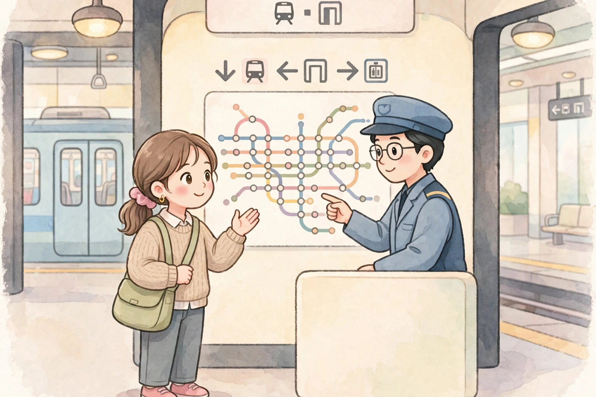
실례합니다, 시청역까지 어떻게 가요?
在地鐵站問路去市廳站，學搭線、換乘和下車的說法。
進入課程 →
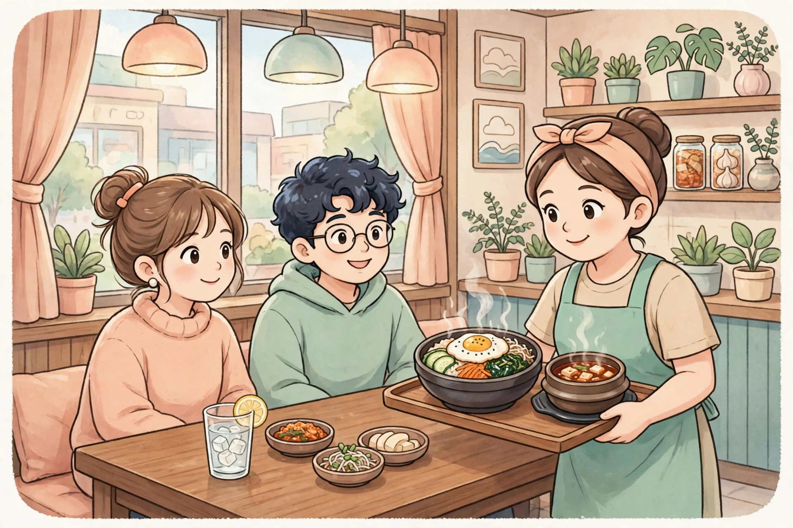
안녕하세요, 두 명이에요. 창가 자리 있어요?
在餐廳點餐，學說人數、要靠窗的座位、點拌飯和泡菜湯。
進入課程 →
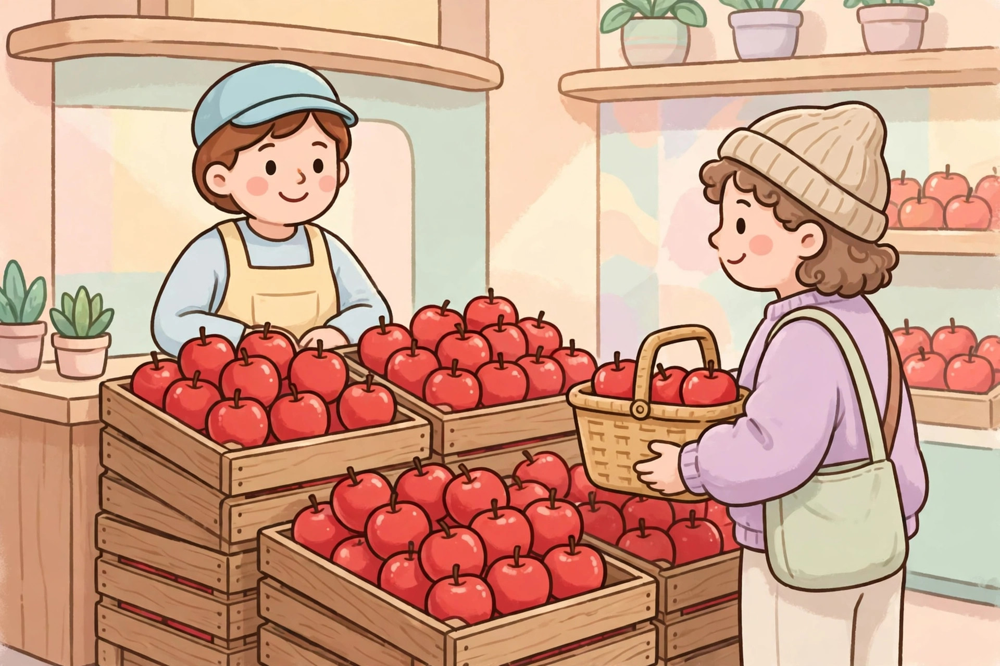
안녕하세요, 사과가 어디에 있어요?
在超市水果區買蘋果，學問地方、問價錢和結帳。
進入課程 →
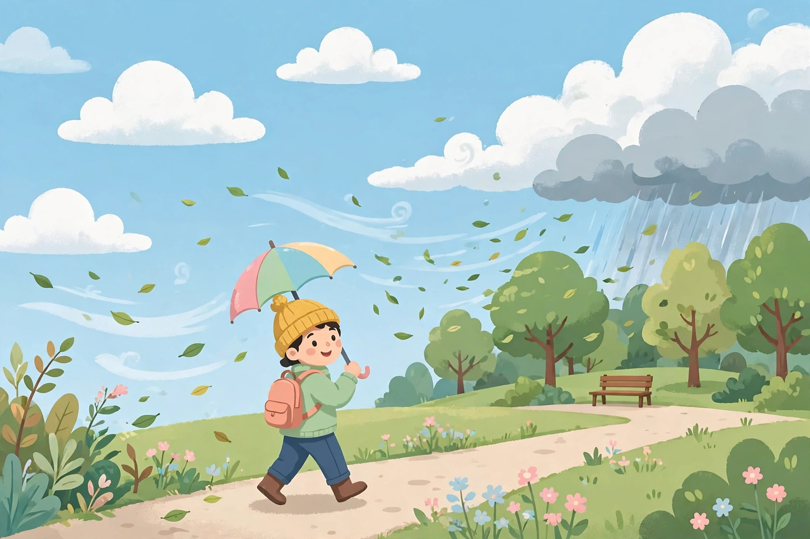
안녕하세요, 오늘 날씨가 어때요?
聊晴朗、刮風、下雨，學問天氣、說將來和約去公園。
進入課程 →
안녕하세요, 어디가 아프세요?
去醫院看病，說頭痛、發燒，學「請吃藥、多喝水」。
進入課程 →
여보세요, 수진 씨? 저예요.
打電話約朋友週末去看電影，學提議、約時間和約在江南站見面。
進入課程 →
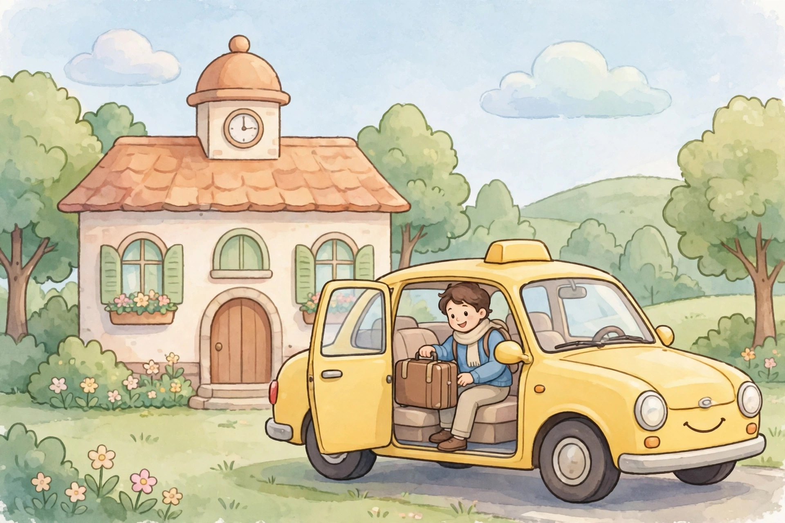
안녕하세요, 택시 타도 돼요?
坐計程車去火車站，學問「可不可以」、請司機開快一點和「大約」怎麼說。
進入課程 →

안녕하세요, 책을 빌리고 싶어요.
去圖書館借書，學「想……」「可以……」和「到……為止」怎麼說。
進入課程 →
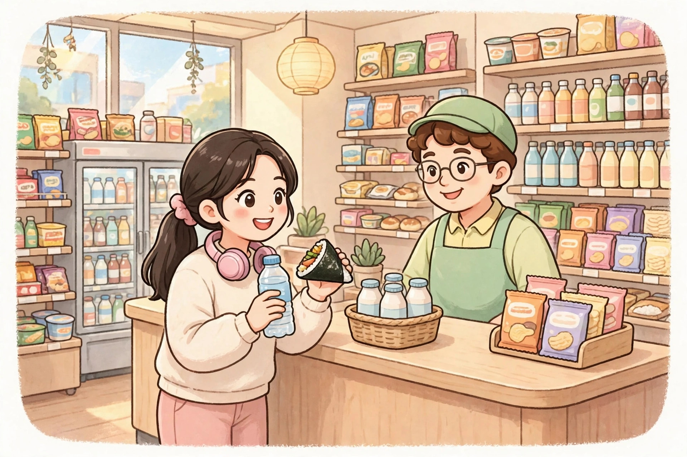
안녕하세요, 물 한 병 주세요.
在便利商店買水、牛奶和三角飯糰，學「也」「用卡結帳」和「我來……」怎麼說。
進入課程 →

안녕하세요, 빵을 사고 싶어요.
在麵包店買奶油麵包，學「請幫我……」「最」和「哪種」怎麼說。
進入課程 →
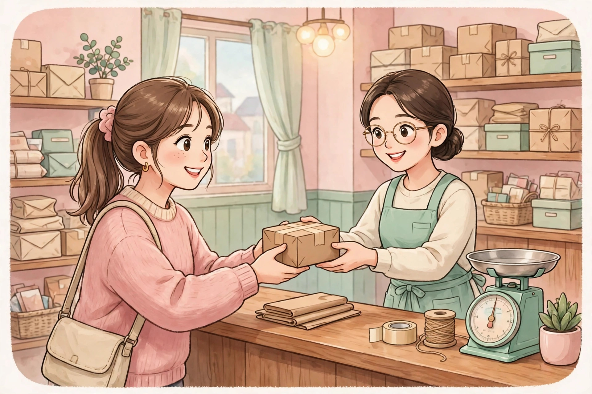
안녕하세요. 소포를 보내고 싶어요.
在郵局寄包裹到釜山，學「想……」「到……」和「重／輕」怎麼說。
進入課程 →

안녕하세요. 약을 사고 싶어요.
在藥局買藥，學說頭痛、咳嗽、發燒和「一天吃三次」。
進入課程 →
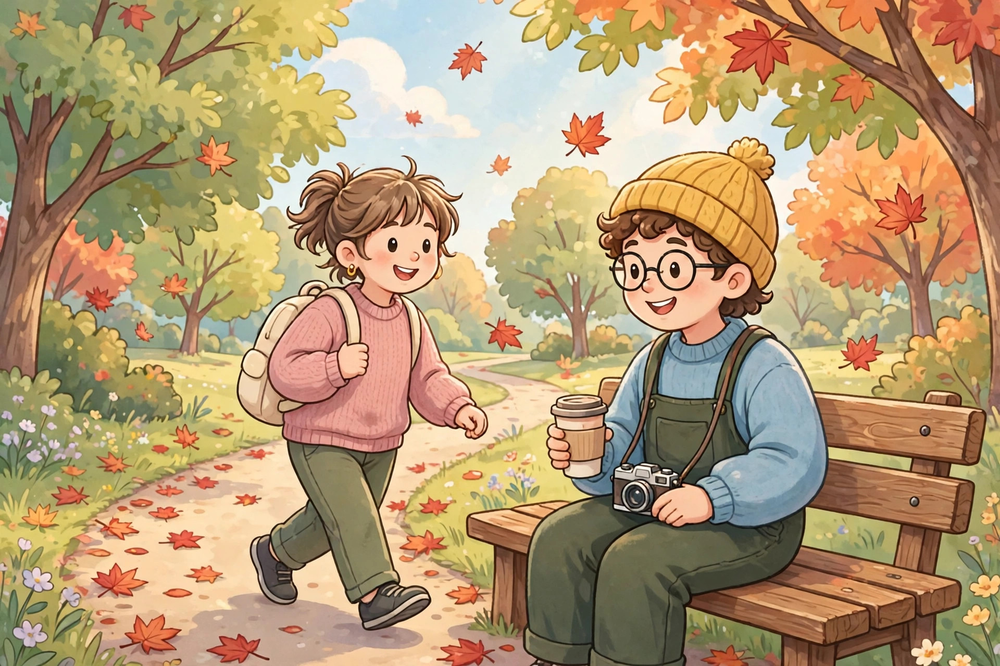
오늘은 토요일이에요.
週末約朋友去公園散步，賞楓葉、喝咖啡、一起拍照。
進入課程 →

좋은 아침이에요.
在家吃早餐，聊麵包、雞蛋、牛奶和咖啡，吃完去學校。
進入課程 →

안녕하세요.
去市場買水果，問價錢、買蘋果和梨子，練習數數和「주세요」。
進入課程 →

안녕하세요.
去理髮店剪頭髮，學說「想剪頭髮」、問怎麼剪、洗頭和問價錢。
進入課程 →
민수 씨, 오늘 저녁에 영화 보러 갈까요?
去電影院看電影，邀朋友一起看電影、買票、買爆米花和可樂。
進入課程 →
新增一天的課程時，只要在 lessons/ 裡加一個新頁面、在首頁加一張卡片、在 assets/ 裡放一張場景圖、在 audio/ 裡放一段音頻，結構不用改。